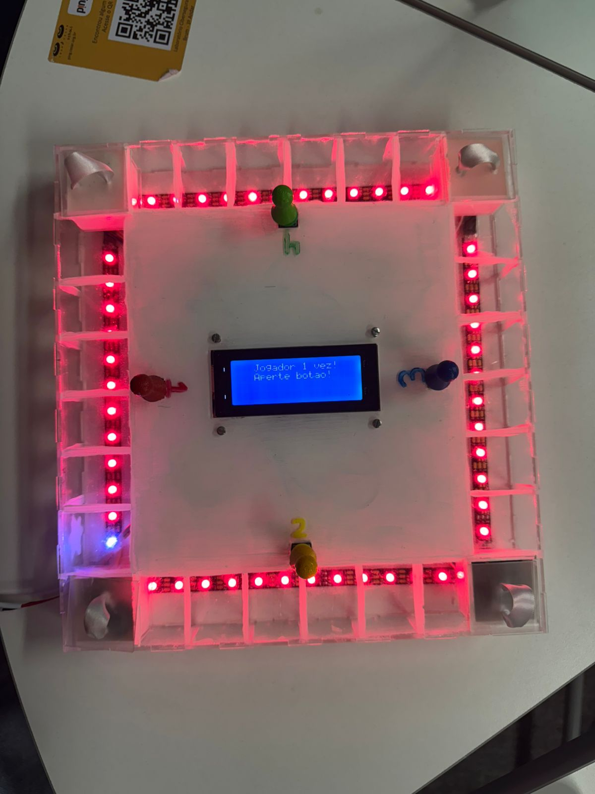

Artefato de Projetos 1
Durante o primeiro período do curso de Ciência da Computação, na CESAR School, tive o prazer de participar da disciplina Projetos 1, na qual desenvolvi, juntamente com meu grupo, um jogo voltado para crianças com Transtorno do Espectro Autista (TEA). Foi, definitivamente, uma experiência desafiadora, que exigiu o desenvolvimento de diversas habilidades, desde a criatividade até o trabalho com Arduino e programação, culminando no nosso projeto final: “Mentes em Jogo” — um jogo que utiliza casas de LED, casas com texturas e desafios que promovem o desenvolvimento emocional, cognitivo e social de crianças com TEA. Além disso, participamos da Mostra TechDesign, realizada no sábado, dia 31/05/2025, onde apresentamos nosso jogo ao público e recebemos feedbacks valiosos sobre como poderíamos aprimorá-lo e expandir sua acessibilidade para o maior número possível de pessoas. Foi, sem dúvida, uma oportunidade de crescimento, aprendizado e uma experiência extremamente enriquecedora para todos nós!